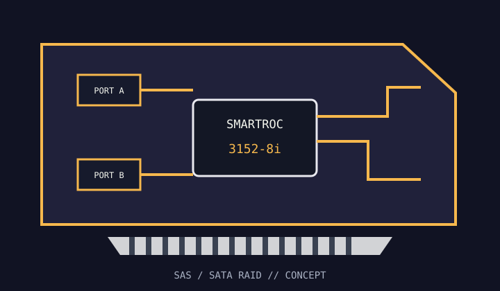

[ INDIVIDUAL COMPONENT // STORAGE / DISK I/O ]
Microchip Adaptec SmartRAID 3152-8i
Eight internal SAS/SATA lanes and SmartRAID hardware array management in a PCIe Gen3 host adapter.

MODEL SCOPE: SmartRAID 3152-8i. Check full ordering code and board revision; accessory bundles and firmware packages can vary.
Reference specifications
| Model / controller | Adaptec SmartRAID 3152-8i; SmartROC 3100-series RAID-on-Chip. |
|---|---|
| Host bus | PCI Express 3.0 x8. |
| Ports | Eight internal lanes via two SFF-8643 Mini-SAS HD connectors. |
| Protocols | 12 Gb/s SAS and 6 Gb/s SATA devices, subject to the drive and backplane link capabilities. |
| RAID / HBA mode | Hardware RAID 0, 1, 5, 6, 10, 50 and 60; mixed RAID and raw-device modes are controlled by supported firmware. |
| Cache / protection | 2 GB DDR4 write cache; flash-backed cache protection uses the supported ASCM35F module. Check the exact package for included protection hardware. |
| Firmware / OS | Use the Microchip SmartRAID 3100 firmware, maxView release and OS driver matched to the installed OS. Consult Microchip's current supported-OS matrix rather than assuming generic SAS support. |
| Drive / backplane caveats | Match Mini-SAS HD cable wiring to the backplane; verify expander, SATA tunneling, sector format and enclosure-management support before deployment. |
Compatibility and service notes
- Use a supported flash-backed cache-protection module before selecting a write-back policy; otherwise select a protected policy supported by the controller.
- Array migration is controller-family and firmware dependent. Preserve a backup and document the source RAID metadata first.
- A mechanically compatible PCIe slot may be lane-limited or share bandwidth with other devices; check the system manual.
Sources & further reading
- Microchip — SmartRAID 3152-8i product and documentation pageManufacturer model page and downloads for this exact SmartRAID SKU.
- Microchip — SmartHBA / SmartRAID Installation and User GuideOfficial setup, cache, firmware, driver and compatibility instructions.
- Microchip — Adaptec SmartRAID 3100 Series sell sheetOfficial product-family feature and configuration reference.